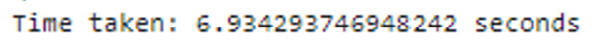
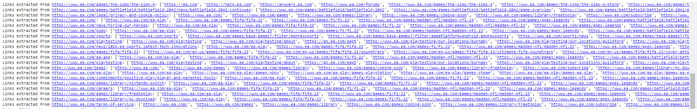
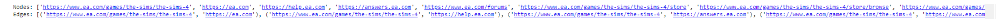
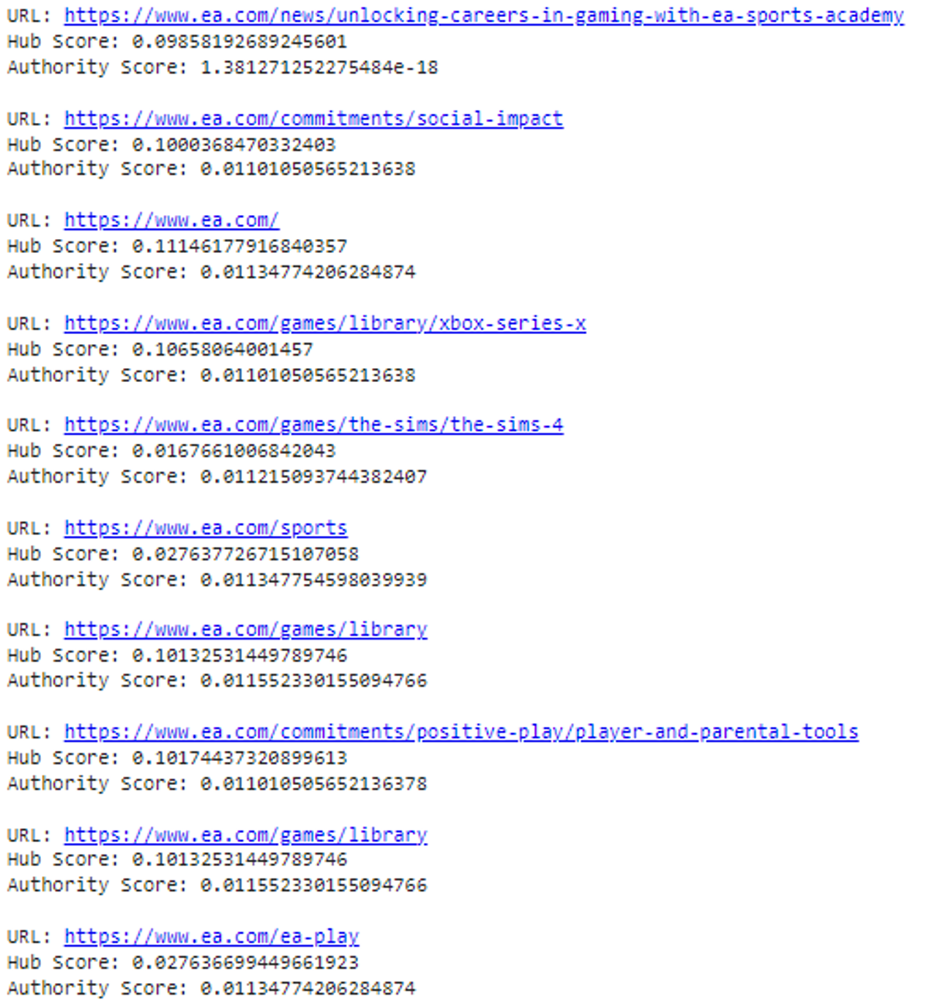
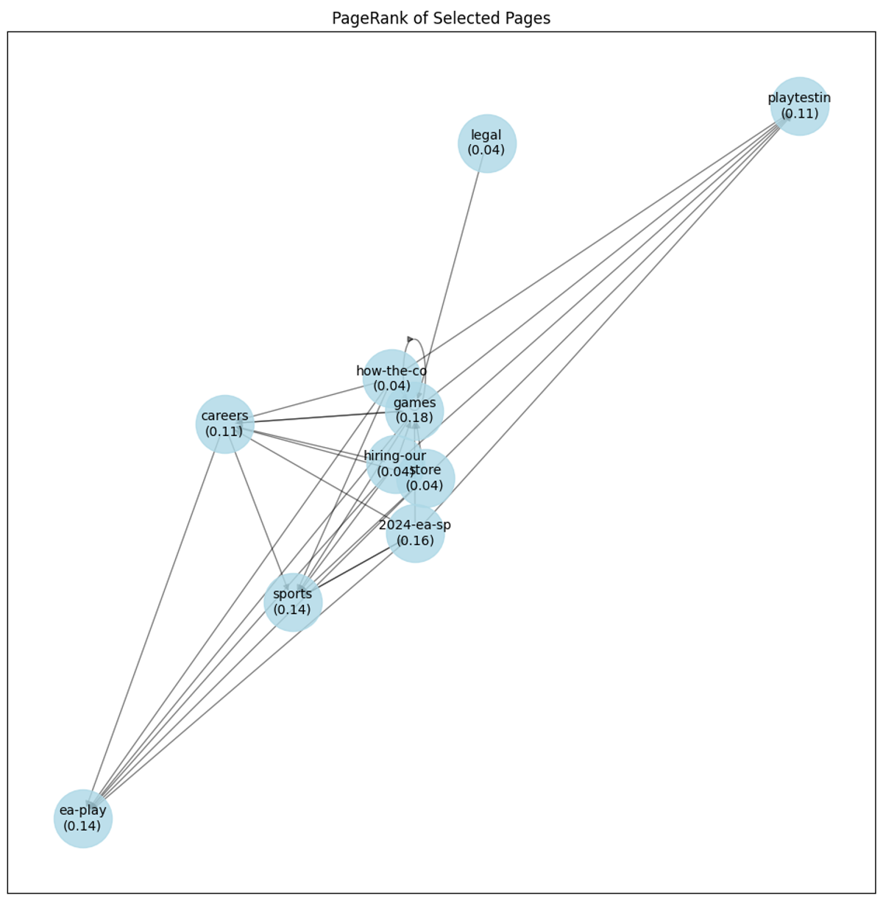

טכנולוגיות בשימוש
- ספריות Python:
- requests: לשליחת בקשות HTTP כדי למשוך דפי אינטרנט.
- BeautifulSoup: לניתוח HTML וחילוץ מידע.
- pandas: לניהול נתונים ולייצוא תוצאות ל-Excel.
- openpyxl: לעבודה עם קבצי Excel ולעיצוב תאים.
- nltk: לעיבוד שפה טבעית כולל הסרת מילים לא חשובות.
- ניהול נתונים:
- Counter לספירת תדירות מילים.
- defaultdict לבניית אינדקס הפוך.
- חישובים מתמטיים:
- math לחישוב ציוני IDF ו-TF – IDF.
- טכנולוגיות אינטרנט:
- urljoin ליצירת כתובת URL מלאה ממסלולים יחסיים.
זמן ריצה של השאילתות

זמן הריצה תלוי בגורמים הבאים:
- גודל הדף: דפים ארוכים לוקחים יותר זמן לעיבוד.
- מספר הדפים: מספר הדפים המתקבלים משפיע על הזמן הכולל.
- תשובות מהשרת: זמן תגובה של השרת.
- קוד: יעילות הקוד ואופטימיזציה.
שיפורים:
- שימוש בטכניקות caching לשמור תוצאות של דפים שנבדקו.
- הגבלת מספר השאילתות: כדי למנוע עיכובים מהשרת.
- אופטימיזציה של קוד: שיפור אלגוריתמים לניקוי טקסט והפקת מילות מפתח.
לכל דף שהוחזר חושבו כל הלינקים שיש בדף הזה:

עם קביעת Nodes ו-Edges:

ועבור כל דף שהוחזר חושבו ה-Hubs ו-Authorities:

אם יש ערכים גבוהים בשדה ה-hubs זה מצביע על כך שישנם דפים שמרכזים קישורים רבים, מה שהופך אותם ל-hubs חשובים.
אם יש ערכים גבוהים בשדה ה-authorities זה מצביע על כך שישנם דפים שמקבלים קישורים רבים, מה שהופך אותם ל-authorities חשובים.
10 דפים שהזחלן החזיר
נתנו לזחלן 10 מאמרים וקיבלנו את ה-pageRanks הבאים:
- https://www.ea.com/games - PageRank: 0.1763
- https://www.ea.com/news/2024-ea-sports-latest-tech-innovations - PageRank: 0.1601
- https://www.ea.com/sports - PageRank: 0.1450
- https://www.ea.com/ea-play - PageRank: 0.1450
- https://www.ea.com/playtesting - PageRank: 0.1130
- https://www.ea.com/careers - PageRank: 0.1130
- https://www.ea.com/news/hiring-our-heroes - PageRank: 0.0369
- https://www.ea.com/news/how-the-community-helps-shape-the-sims - PageRank: 0.0369
- https://www.ea.com/legal - PageRank: 0.0369
- https://www.ea.com/store - PageRank: 0.0369
קיבלנו את הגרף:

דירוג המשתמשים:
| page | PageRank | User1 | User2 |
|---|---|---|---|
| 1 | 0.1763 | רלוונטי | רלוונטי |
| 2 | 0.1601 | רלוונטי | רלוונטי |
| 3 | 0.145 | רלוונטי | רלוונטי |
| 4 | 0.145 | רלוונטי | רלוונטי |
| 5 | 0.1130 | לא רלוונטי | רלוונטי |
| 6 | 0.1130 | רלוונטי | לא רלוונטי |
| 7 | 0.0369 | לא רלוונטי | לא רלוונטי |
| 8 | 0.0369 | לא רלוונטי | לא רלוונטי |
| 9 | 0.0369 | לא רלוונטי | לא רלוונטי |
| 10 | 0.0369 | לא רלוונטי | לא רלוונטי |
ניתן לראות כי ארבעת הדפים הראשונים רלוונטיים עבור שני המשתמשים, הדף החמישי והשישי חלוקים בעיניי שניהם וארבעת הדפים האחרונים הוגדרו בתור לא רלוונטיים.